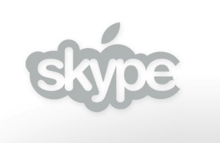

Eindelijk!
woensdag 1 september 2004 | Apple

Door deze eerste beta release van Skype voor OS X is een van de laatste redenen om jaloers te zijn op de eigenaar van een Windows computer in rook opgegaan. Mijn Skype-naam is 'Scene24'. Hou u vooral niet in.